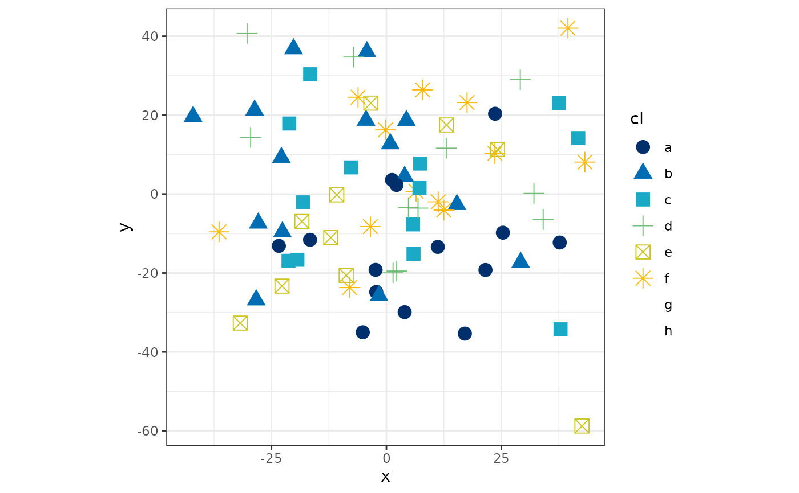

idea_palettes.RdA collection of color palettes based on the [IDEA Bradn Guidelines](whttps://ideapublicschoolsorg.sharepoint.com/sites/MCE/Shared (you'll need to behind the firewall to see that guide).
idea_palettes
An object of class list of length 7.
The list of available palettes is: * qual * div * blueorange * greenorange * bluegray * greengray * orangegray
#>#> ✔ ggplot2 3.3.3 ✔ purrr 0.3.4 #> ✔ tibble 3.1.0 ✔ dplyr 1.0.5 #> ✔ tidyr 1.1.3 ✔ stringr 1.4.0 #> ✔ readr 1.4.0 ✔ forcats 0.5.1#> Conflicts ────────────────────────────────────────── tidyverse_conflicts() ── #> ✖ readr::col_factor() masks scales::col_factor() #> ✖ purrr::discard() masks scales::discard() #> ✖ dplyr::filter() masks stats::filter() #> ✖ dplyr::lag() masks stats::lag()df <- data.frame(x = rnorm(100, 0, 20), y = rnorm(100, 0, 20), cl = sample(letters[1:8], 100, replace=TRUE)) ggplot(df, aes(x, y, colour=cl, shape=cl)) + geom_point(size=4) + scale_colour_idea() + theme_bw() + theme(aspect.ratio=1)#> Warning: The shape palette can deal with a maximum of 6 discrete values because #> more than 6 becomes difficult to discriminate; you have 8. Consider #> specifying shapes manually if you must have them.#> Warning: Removed 22 rows containing missing values (geom_point).# Make a histogram using the qual palette ggplot(df, aes(x, fill=cl)) + geom_histogram() + scale_fill_idea(palette="qual")#>